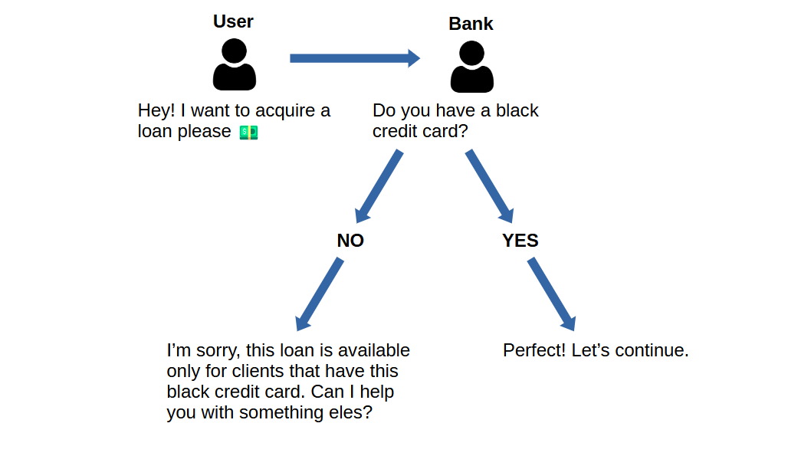

1 Introduction
This article describes a real-world situation where me and my team used data to convince our client (which is one of the biggest companines in the brazilian financial market) at the time to make a better decision. Special thanks to Guilherme Goes and Paulo Gonçalves. They both help me to present these ideas and insights to our client.
Making decisions is hard. But you always make a better decision when you have data to guide you into a safer and better outcome. When you do not have data to back you up, you are basically in the dark. That is, you make the decision, but you do not know upfront what are the possible outcomes of that decision. You just hope for the best, and this is always a hard position to be in.
2 Context
In essence, our client was a big brazilian bank, one of the largest in the market. The bank was using our digital plataform to sell different products and services through a specific communication channel. Our job was to analyze the data generated by the platform to understand how the bank could increase their sales inside this channel.
A secured loan was one of several products offered by the bank on this channel. However, to be elegible for this loan, the user needed to fit into some criterias. Most of these criterias were very standard for any type of loan, like… the person should not have any legal debts with the government, he/she needs to have a social ID, a stable home address, etc. Some other criterias were purelly financial and assets related, and were also a very commom practice among banks, like… the person need to be fully employed, he/she needs to have a car which is fully paid, and, this car needs to be a personal property of the person, i.e. it cannot be a borrowed car from another person.
2.1 The weird criteria
But one of the many criterias was a bit strange for us. Identify the exact criteria is not important for the content of this article, neither is important to explain how the data helped us to advise our client. That is why I am going to use a random criteria here in this article.
Let’s just say that, to be elegible for this loan, the user needed to have a black credit card. If the user did not had this black credit card, we automatically rejected the user’s request for the loan.
In essence, we had a flow that worked a bit like this:

2.2 Banks are always facing a trade-off between risk and profit
Loans are one of the main products offered by every commercial bank in the world. However, a loan is a profit opportunity that always come at some cost for the bank. This cost comes in the format of risk.
That is, when a bank make a loan to somebody, there is always a risk that this “somebody” will not pay this loan back to the bank. This risk might be low or high, depending on several factors about this “somebody”.
That is why banks are usually very good at analysing and estimating risks. When a person looks to acquire a loan, the bank starts to analyze several factors in order to estimate how much risky is to give a loan to this person.
2.3 Why this weird criteria existed?
I do not personally know any employee from the bank, neither do I know the hole bank strategy. But I do know that the bank probably made this weird decision, because of this risk trade-off that I described above.
So the bank probably decided that the user needed to have this specific black credit card to acquire this loan, because the bank estimated that the risk is higher for people that do not have this black credit card. If the estimated risk is higher, then, the bank have a good reason to not offer this loan to those people who do not have a black credit card.
3 What we discovered
We discovered that the bank was constantly losing a huge opportunity because of this specific criteria, or, this specific business rule. In essence, we used the data from the API to identify which users did have, and which did not have this specific black credit card.
Doing some basic math, we identified that more than 80% of the users that visited our channel did not have this black credit card. This means that we were automatically losing 80% of the potential leads in this communication channel, because they were quickly rejected in the flow as a result of this criteria.
This finding raises some important possibilities for us:
- Are we reaching the right audience?
- Maybe we should focus in attract only people that do have the black credit card to our channel?
- Is this trade-off worth it?
- People that do not have the black credit card have a risk that is 80% higher?